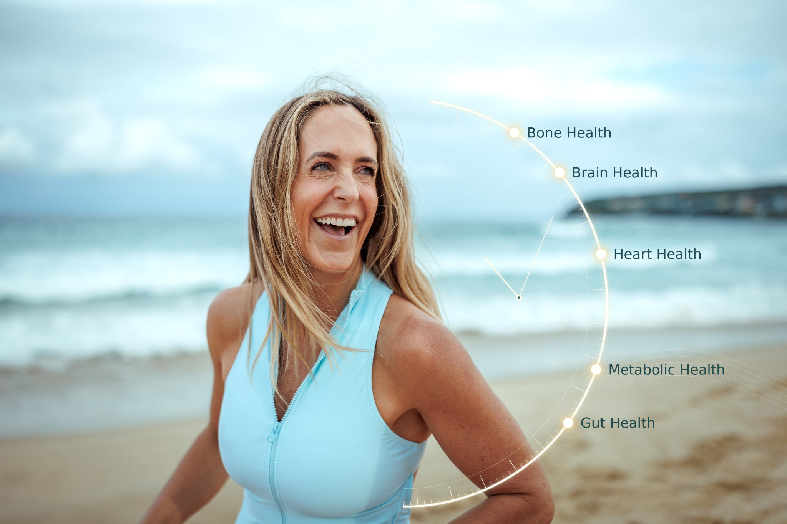

Health Clarity Calibrated for Midlife and Beyond
An all-in-one health platform for women in midlife and beyond.
BiomarkHER reads your health through the lens of your menopause timeline, connecting changes in bone, heart, gut and metabolic health with where you are in the menopause transition and beyond.

Illustrative graphic. Posed by model.Your health. Intelligently connected®
Your health, together.
Labs, records, wearables and your life story, all in one place.
Explore the Hub ↗Your results, explained.
Menopause Aware Intelligence and your body systems bring the bigger picture into focus.
Explore the intelligence ↗Your people, connected.
Care for the people you love, with control over what you share.
Explore HerCircle ↗Your next step in care.
Planned clinician connections, testing and support informed by your timeline.
Explore the Care ↗All your health.
One place to begin.
Start with what you already have. Build a health record that grows with you: every lab, every doctor, every device and your own story, tracked over time.
 Stock photo. Posed by model.
Stock photo. Posed by model.Labs, records and imaging
Upload results as a PDF or connect your provider. Reports, scans and screening history on one timeline.
Your wearable, in context
Sleep, heart rate and activity alongside your lab results.
Your life story
Reproductive history, family history, life events, medicines and supplements, connected to your record.
A summary for your doctor
A cited PDF to bring to your next appointment, with a nudge when a retest is due.
Understand what’s changing.
And why.
See how your biomarkers change over time, and where estrogen loss may help explain why. Still having periods? Your stage matters, too.
One menopause timeline, multiple connected systems.
Your menopause timeline
Each system changes on its own schedule. See where you are on each one.
Thirteen system scores
Each on its own scale. No single score, and no “biological age”, for all of you.
Every score has a reason
Why: your LDL cholesterol is 148 mg/dL. On your menopause timeline: see what research in women at your stage says about it.
Sample dataConnections
Look beyond single numbers to the patterns across systems.
Ask anything
Plain-language answers from reviewed content and research in women. It never prescribes.
 Stock photo. Posed by model.
Stock photo. Posed by model.
Every change has context.
Bring medicines, supplements, food and movement into the same conversation as your results, with research to help explain what may be contributing, and honest limits on what the data can tell you.
A medicine is part of the story.
Place a medicine’s start date alongside your results. See how your results have moved since you started, without assuming the medicine caused every change.
Education on every result
Open a result to see what it is, why it matters on your timeline and what the research says.
Honest notes
When evidence is missing or a popular claim isn’t supported, you see that clearly.
See the research
Every answer about your health shows where it came from: studies in women in midlife and beyond.
Care for your people.
Keep control of your privacy.
Your health and your family’s, connected on your terms. Choose what Mom can see:
Some things always stay private. Reproductive and vaginal microbiome results are never shared through these settings.
DEMO ONLY · NOTHING IS SAVED
Up to six people, free
Bring your mother, sister, daughter or partner. You pay; the people you invite join free.
Three sharing levels
An overview, what you choose, or everything shareable. Change it at any time.
Alerts you choose
For each person: no alerts, serious updates only, or all alerts.
Help your mother
Help manage her labs, medicines and visits, using only what she agrees to share.
The next chapter of your care.
Take your doctor a clear summary of what’s changed, with the research behind it. Connected care to help you take the next step is coming; timing to be confirmed. BiomarkHER works with your doctor, never in place of one.
What’s changed, questions to ask, sources cited
Record a doctor’s visit
With everyone’s agreement, then a plain-language summary. Planned after legal review.
Care that understands your timeline
A vetted clinical partner to help you act on what you see.
Order missing tests
Tests that could fill a gap, through a partner if you choose.
Pelvic floor health
A dedicated area built to the same evidence standards.
Clinical trials, only if you say yes
Nothing is shared without your agreement.
Our standard: research in women like you.
Not the open internet, and not studies done only in men.
Found
Research in women in midlife and beyond.
Checked
Every summary checked against the study itself.
Signed
Medical review before health content reaches you.
Honest
When the research isn’t there, we say so. And what you buy never changes what you’re told.
“There isn’t enough research on this in women in midlife and beyond to give you a reliable answer yet. This is a good one to raise with your clinician.”
Be among the first to try BiomarkHER.
BiomarkHER is in development. We’ll let you know when early access opens.